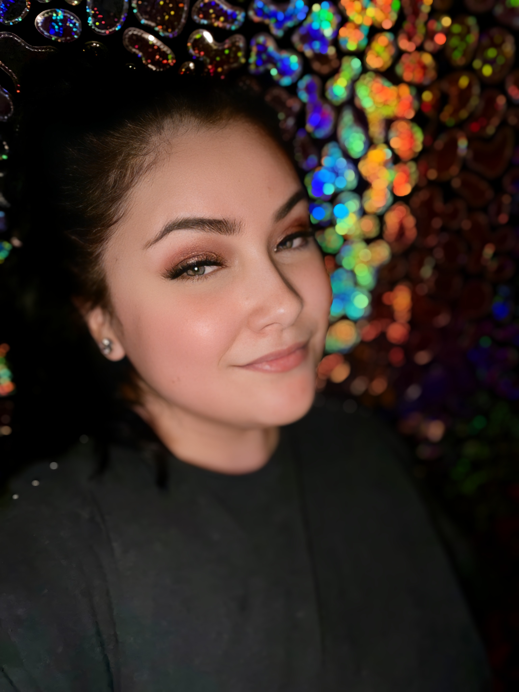

- R. David Lankes
- R. David Lankes
Twenty-first century libraries are crucial third spaces where community members can gather to meet and foster connections, share ideas, develop new knowledge and skills, and engage in entertainment. Libraries should be places where everyone feels not only welcome, but valued; it is imperative that those who work in these organizations are skilled in assessing community needs with an eye on providing equity in services at all times.
| About |
|  |
As a dedicated library
professional, I am passionate about fostering an
inclusive and equitable environment within the
library community. With a commitment to Diversity,
Equity, and Inclusion (DEI) initiatives, I strive to
ensure that our library services and programs are
accessible and welcoming to all patrons. I believe
in the transformative power of libraries to serve as
hubs of knowledge, culture, and community, and I
work tirelessly to create equitable opportunities
for learning and engagement for everyone. Through
innovative programming, community outreach, and
collaborative efforts, I aim to uphold the values of
DEI and support a vibrant, inclusive library for
all.
|
| Resume |
|
Professional Summary
Library Assistant dedicated to meeting youth and family
needs. Focused on diversity and committed to promoting
lifelong learning regardless of socioeconomic status.
Background in elementary and middle grades programming.
Work History
Easton Area Public Library - Youth Services Assistant
08/2021 – Current
·
Facilitate community partnerships to garner returning
patron basis
·
Develop and update materials collection
·
Implement diverse programs and other references for
patrons
Member of Project READY cohort Bethlehem Public Library
- Circulation Clerk 10/2018 - 07/2021
·
Manage, design and execute all social media
communication using Facebook, Instagram, Canva, and
iMovie
·
Design effective marketing materials promoting events,
generating community participating and attendance
·
Assist with circulation of library materials, shelving,
handle customer inquiries
Animals in Distress - Volunteer 11/2016 - 10/2018
·
Assisted with fundraising and socialized with shelter
animals
Bethlehem Area Public Library, South Side Branch -
Summer Intern 06/2018 - 08/2018
·
Assist with summer kid's camp
Cops-N-Kids - Volunteer 06/2006 - 08/2011
·
Organized and distributed books during various community
events Skills
·
Educational Programs
·
Library Resources
·
Patron Service
·
Data Analysis
·
Community Relations
·
Information Systems Education
05/2019 DeSales University Bachelor of Arts: Human
Resource Management
05/2019 DeSales University Bachelor of Arts: Business
Management 05/2017 Northampton Community College Associate of Arts: Business Management
|
|
© 2024 Libby Ortiz. All rights reserved. |